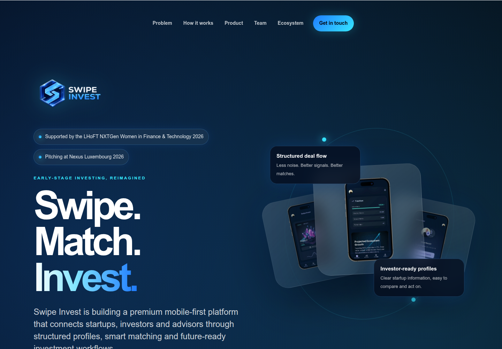
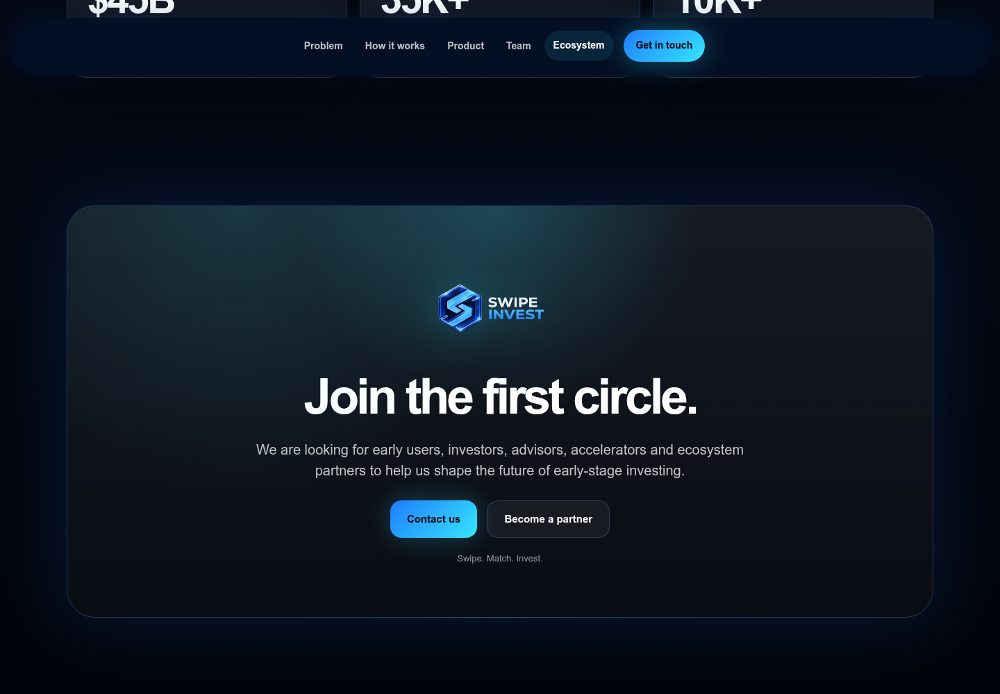

Profile
- Company
- Swipe Invest
- Url
- https://www.swipe-invest.com/
- Source Category
- Direct competitors
- Research Status
- Deep Cited Research / Draft Complete
- Current Status
- live but pre-launch - re-verified 2026-07-19 by direct fetch (HTTP 200, WordPress/Elegant Themes site). Site explicitly describes itself as still 'building' the platform and is actively recruiting 'early users, investors, advisors, accelerators and ecosystem partners' - i.e. product has not fully launched to the public. Not dead/hijacked, but pre-product-market-fit stage.
- Founded Launch Year
- not found / no public source - no exact founding date; company is currently preparing to pitch at Nexus Luxembourg (10-11 June 2026) and is in the LHoFT NXTGen Women in Finance & Technology 2026 program (Feb-June 2026), indicating very recent formation, likely 2025-2026
- Company Age
- <1-2 years (estimated)
- Hq Country
- Luxembourg
- Operating Area
- Europe (site explicitly frames itself around the European tech investment ecosystem: '$45B projected 2024 European tech investment', '35K+ early-stage startups in Europe')
- Target Users
- Early-stage startups, investors, and advisors in the European (initially Luxembourg-centric) startup ecosystem
- Product Category
- swipe/card matchmaking; founder-investor / capital matching; portfolio reporting. No cofounder/founder-to-founder feature, no confirmed AI matching, no data room, no confirmed NDA/e-sign.
Product Flows
- Swipe Card Interface
- yes - explicit step in the described flow: 'Swipe: Relevant opportunities appear in an intuitive discovery experience'
- Mutual Match
- yes - 'Match: When both sides are interested, a trusted connection opens instantly'
- Ai Matching Scoring
- not found / no public source - site describes 'Smart matching' via 'structured profiles and aligned interests' but does not use the term AI or describe any machine-learning methodology; this is a materially weaker claim than competitors that explicitly market 'AI' (contradicts original automated pass which marked 'yes')
- Ai Deck Scoring
- not found / no public source
- Founder To Founder Flow
- Not applicable - Swipe Invest is exclusively a startup-investor-advisor matching product, not a cofounder matcher.
- Founder To Investor Flow
- Create structured, verified profile as a startup, investor, or advisor -> define criteria (stage, sector, expertise, risk appetite, interests) -> relevant opportunities surface in a swipe-based discovery feed -> match occurs and 'a trusted connection opens instantly' when both sides are interested -> planned/future layer: 'invest-ready' workflows preparing the path toward structured investment (cap table, reporting, follow-up), explicitly described as not yet built ('the next layer prepares the path toward structured investment workflows'). Additional planned feature: founders can present short video pitches instead of static decks. Investors are promised a future portfolio-reporting dashboard.
- Project Profiles
- Structured startup profiles (one per startup) with comparison-oriented fields; no evidence of multi-project support per founder
- Messaging Collaboration
- Site promises 'direct conversations' once matched but gives no further detail on chat/collaboration tooling; not yet a documented, built feature given pre-launch status
- Mobile App
- not found / no public source - site describes itself as 'building a premium mobile-first platform' (future tense / in development); no app store listing found for either iOS or Android
- Web App
- Partial/pre-launch - current site functions as a marketing/waitlist page ('Join the first circle... contact us / become a partner'); no evidence of a live, usable web application yet
Security & Documents
- Nda Gated Unlock
- not found / no public source - no NDA-gating step described anywhere on the site or in search results
- Data Room
- not found / no public source - product explicitly frames itself as replacing 'endless PDFs' with clean profiles rather than offering a document vault
- E Signature
- not found / no public source (original automated pass marked this 'yes' with no supporting evidence found; downgraded)
- Meeting Prep Ai Briefing
- not found / no public source
Pricing, Funding & Traction
- Pricing Model
- not found / no public source
- Business Model
- not found / no public source - likely future marketplace/subscription model, not yet disclosed
- Total Funding
- not found / no public source - the '$45B' figure in the original automated pass's 'total_funding' field is a misread: it is the site's cited *macro statistic* ('Projected investment level in 2024 across the European tech ecosystem'), not Swipe Invest's own funding. No company-level funding has been disclosed; company appears to be pre-seed/pre-funding, supported so far only by an accelerator-style non-equity program (LHoFT NXTGen).
- Funding Rounds
- not found / no public source
- Investors
- not found / no public source - no named investors; only ecosystem/accelerator support (LHoFT) identified
- Funding Source Type
- Pre-seed / accelerator-supported (non-dilutive program support, not confirmed equity investment)
- Last Funding Date
- not found / no public source
- Users Traction
- not found / no public source - no user, startup, or investor counts disclosed; site is actively recruiting its first cohort of users as of mid-2026
- Deals Funding Facilitated
- not found / no public source (product has not launched to general users)
- Partnerships
- LHoFT (Luxembourg House of Financial Technology) NXTGen Women in Finance & Technology 2026 program (Feb-June 2026); scheduled to pitch at Nexus Luxembourg 2026 (10-11 June 2026, LuxExpo The Box)
- Media Coverage
- not found / no public source - no independent press coverage found; all located mentions trace back to LHoFT program listings and the company's own site
- Product Update Activity
- not found / no public source - single-page site with an 'Archives: June 2026' WordPress blog marker suggesting the site itself was recently stood up/updated around mid-2026
- Acquisition Rebrand History
- not found / no public source
Scores
- Product Overlap Score
- 4
- Feature Maturity Score
- 2
- Market Traction Score
- 1
- Funding Strength Score
- 1
- Ai Depth Score
- 1
- Nda Security Strength Score
- 1
- Network Moat Score
- 1
- Direct Threat Score
- 1.6
- Source Confidence
- Low-Medium
Evidence Notes
- Primary Sources
- https://www.swipe-invest.com/
- Secondary Sources
- https://lhoft.com/
- Unsupported Claims
- Original automated pass's 'total_funding: investment $45B' was a clear misparse of a macro-ecosystem statistic, not the company's funding - corrected to 'not found' here. All product features beyond the 5-step onboarding flow are explicitly framed by the company itself as future/planned, not live.
- Contradictions
- Original automated pass marked ai_matching_scoring 'not found' (correct - stayed 'not found' here after verification) but marked e_signature 'yes' with no basis found; downgraded. Also corrected the misread '$45B' funding figure noted above.
- Last Checked
- 2026-07-19
- Notes
- Genuinely early-stage, all-female-founding-team fintech venture based in Luxembourg, positioned around European accelerator/ecosystem credibility (LHoFT, Nexus Luxembourg) rather than product traction or funding, which have not yet materialized publicly. Weak current competitive threat but worth monitoring post-Nexus Luxembourg 2026 pitch for a possible funding/launch announcement.
Registration Flow
Research date: 2026-07-19. Screenshots are sanitized public copies from the private registration-flow capture set; credentials, tokens, verification links/codes, browser chrome, and private identifiers are not intentionally published.
Outcome: no self-service browser signup completed.
Stop point: Official /partner destination returning Not Found after the homepage's Join the first circle section
Blocker / boundary: Swipe Invest does not currently expose a working self-service web registration flow. The homepage provides only an email contact action and a Become a partner link whose official destination returns Not Found.
- Official public homepage. Swipe Invest's official homepage presents a mobile-first startup, investor, and advisor matching platform. The public page describes a future create-profile flow but does not provide a sign-up, register, log-in, or app-launch control.
- Join the first circle contact section. The homepage's only onboarding-oriented section asks early users, investors, advisors, accelerators, and ecosystem partners to get involved. It offers Contact us, which is an email link, and Become a partner; there is no self-service registration form.
- Partner route unavailable. Following the official Become a partner link opens the site's /partner route, which returns a plain Not Found response. No application or registration form is available at that destination.

